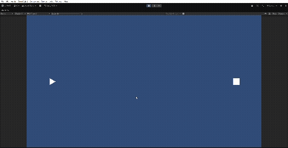

はじめに
これから何回かにかけてUnityでの弾幕の作り方を記事にしようと思っています。
今回は最初の一歩というとこで、
- Unityでプロジェクトの作成
- GameObjectの作成（Player, Enemy, EnemyBullet）
- 基本的な動作のプログラム
をやっていこうと思います。
今回の内容を実行すると、以下のようなゲームが作れます。

Unityでのプロジェクトの作成
UnityやUnity Hubのインストール方法は他の方の記事を参考にしてください。 （そのうち書くかもしれません）
今回のUnityのversionは 6000.3.10f1 です。
まずは、Unity Hubから新しいプロジェクトを作成します。
- 新しいプロジェクト
- テンプレートは「2D(Built-In Render Pipeline)」
- プロジェクト名や保存場所を設定
- プロジェクトを作成
これでプロジェクトが作成されました。
Player, Enemy, EnemyBulletの作成
Unityのプロジェクトが立ち上がったら、シューティングの基本となるObjectを作成します。
今回は、Player（プレイヤー）を三角、Enemy（敵）を四角、EnemyBullet（敵の弾丸）を丸で作成します。 横画面で、プレイヤーが左、敵が右側にいる想定です。 上下にしたい方は適宜修正してください。
Player
- Hierarchyで右クリック → 2D Object → Sprites → Triangle
- 名前をPlayerにする
- PlayerのInspectorのTransformで以下を設定する
- Position: X:-7, Y:0, Z:0
- Rotation: X:0, Y:0, Z:90
- Scale: X:0.5, Y:0.5, Z:1
Enemy
- Hierarchyで右クリック → 2D Object → Sprites → Square
- 名前をEnemyにする
- EnemyのInspectorのTransformで以下を設定する
- Position: X:7, Y:0, Z:0
- Rotation: X:0, Y:0, Z:0
- Scale: X:0.5, Y:0.5, Z:1
EnemyBullet
- Hierarchyで右クリック → 2D Object → Sprites → Circle
- 名前をEnemyBulletにする
- EnemyBulletのInspectorのTransformで以下を設定する
- Position: X:0, Y:0, Z:0
- Rotation: X:0, Y:0, Z:0
- Scale: X:0.2, Y:0.2, Z:1
- HierarchyのEnemyBulletをProjectにドラッグ＆ドロップしてPrefab化する
弾幕では敵の弾は大量に複数使用するので、Prefab化して利用すると便利です。
基本的なスクリプトを作る
それぞれのObjectに基本的なスクリプトを作成します。
Playerのスクリプト
やりたいこと
- WASDキーもしくは矢印キーで上下左右に動く
- 画面の端までしか移動できないようにする
- 現時点では敵の弾丸との当たり判定や弾の発射はしない
- ブログの目的が敵の弾幕の作成がメインだから
using UnityEngine;
// プレイヤーの移動処理を行うスクリプト
public class PlayerMovement : MonoBehaviour
{
// プレイヤーの移動速度
public float speed = 2f;
void Update()
{
// キーボード入力を取得
// Horizontal : A/Dキー または ←/→キー
// Vertical : W/Sキー または ↑/↓キー
float moveX = Input.GetAxis("Horizontal");
float moveY = Input.GetAxis("Vertical");
// 移動方向ベクトルを作成
// normalized を使うことで、斜め移動時の速度が速くなるのを防ぐ
Vector3 movement = new Vector3(moveX, moveY, 0f).normalized;
// プレイヤーの位置を移動させる
// Time.deltaTime を掛けることでフレームレートに依存しない移動になる
transform.position += movement * speed * Time.deltaTime;
// プレイヤーの現在位置を取得し、画面外に出ないように制限する
// Mathf.Clamp(値, 最小値, 最大値)
// x座標は -8 ～ 8 の範囲に制限
float x = Mathf.Clamp(transform.position.x, -8f, 8f);
// y座標は -4 ～ 4 の範囲に制限
float y = Mathf.Clamp(transform.position.y, -4f, 4f);
// 制限後の座標をプレイヤーの位置として再設定
transform.position = new Vector3(x, y, 0f);
}
}
PlayerMovement.csができたら、SceneのPlayerにドラッグしてアタッチします。
これでPlayerを自由に操作できるようになりました。
※ 画面端の判定がハードコーディングされているので、修正したほうがいいかもしれませんが、とりあえず進めます。
Input Systemのエラーが出たら
Playerのコントロールが旧Input Systemを使っているので、エラーが出る可能性があります。
InvalidOperationException:
You are trying to read Input using the UnityEngine.Input class
この場合はメニューバーから
- Edit
- Project Settings
- Player
- Other Settings
- Both
にすると解決します（Unityの再起動が必要です）。
EnemyBulletのスクリプト
やりたいこと
- 弾を左方向に移動させる
- 画面外に出たら弾を廃棄する
using UnityEngine;
// 敵が発射する弾の動作を制御するスクリプト
using UnityEngine;
// 敵が発射する弾の動作を制御するスクリプト
public class EnemyBullet : MonoBehaviour
{
// 弾の移動速度
public float speed = 5f;
void Update()
{
// 弾を左方向に移動させる
// Vector2.left は (-1, 0) を表し、画面の左方向を意味する
// speed を掛けることで移動速度を調整
// Time.deltaTime を掛けることでフレームレートに依存しない移動になる
transform.Translate(Vector2.left * speed * Time.deltaTime);
// 画面外に出たら弾を削除する
CheckOutOfScreen();
}
// 画面外に出たかどうかをチェックする関数
void CheckOutOfScreen()
{
// 現在の弾の位置を取得
Vector3 pos = transform.position;
// 画面外の範囲を設定（プレイヤーと同じ範囲より少し広め）
if (pos.x < -10f || pos.x > 10f || pos.y < -6f || pos.y > 6f)
{
// 弾を削除
Destroy(gameObject);
}
}
}
EnemyBullet.csができたら、Projectビューの EnemyBulletのPrefab にドラッグしてアタッチします。
ちなみに、Destroy / Instantiate を大量にすると重くなるため、Object Poolという方法を取るのが一般的ですが、まずはこの状態で進めます。
BulletManagerのスクリプト
弾の生成処理を1箇所にまとめることで、 後から弾の最適化（ObjectPoolなど）を追加しやすくします。
using UnityEngine;
// 弾の生成を管理するクラス
public class BulletManager : MonoBehaviour
{
// シングルトン（どこからでもアクセスできるようにする）
public static BulletManager Instance;
void Awake()
{
// 既にInstanceが存在する場合は削除
if (Instance != null)
{
Destroy(gameObject);
return;
}
Instance = this;
}
// 弾を生成するメソッド
public GameObject SpawnBullet(GameObject bulletPrefab, Vector3 position, Quaternion rotation)
{
// 弾を生成
GameObject bullet = Instantiate(bulletPrefab, position, rotation);
return bullet;
}
}
BulletManager.csができたら、Unity側で設定します。
- 空のGameObjectを作って、名前をBulletManagerにする
- BulletManager.cs をアタッチ
弾幕ゲームでは1画面に数百〜数千の弾が生成されることがあります。 そのため後の回では、Instantiateの負荷を減らすために Object Poolを利用した弾管理の方法も紹介します。
Enemyのスクリプト
やりたいこと
- Bullets（弾）一定間隔の時間で発射する
- 位置は固定（動かない）
using UnityEngine;
// 敵が一定時間ごとに弾を発射するスクリプト
public class EnemyShooting : MonoBehaviour
{
[Header("弾の設定")]
// 発射する弾のPrefab
// Inspectorから設定する
public GameObject bulletPrefab;
// 弾を発射する位置
// Enemyの子オブジェクトなどを指定しておくと便利
public Transform firePoint;
// 弾を発射する間隔（秒）
public float fireInterval = 1.0f;
// 発射タイミングを管理するタイマー
private float timer;
void Update()
{
// 毎フレーム、経過時間を加算する
// Time.deltaTime は「前フレームからの経過時間（秒）」
timer += Time.deltaTime;
// 指定した発射間隔を超えたら弾を発射
if (timer >= fireInterval)
{
Shoot();
// タイマーをリセット
timer = 0f;
}
}
// 弾を発射する処理
void Shoot()
{
// bulletPrefab を生成する
// 位置 : firePoint.position
// 回転 : firePoint.rotation
BulletManager.Instance.SpawnBullet(
bulletPrefab,
firePoint.position,
firePoint.rotation
);
}
}
EnemyShooting.csができたら、SceneのEnemyにドラッグしてアタッチします。
次に、弾の設定をInspectorで設定します。
- Bullet Prefab: AAssetsのEnemyBulletのPrefabを指定
- Fire Point: 下記参照
- Fire interval: 0.5
Enemyの中心から発射されるように、FirePoint用にEnemyの子オブジェクトを作ります。
- Enemyを右クリック
- Create Empty
- 名前を FirePoint にする
- Positionを (0,0,0) にする
Inspectorで、Fire PointにこのFirePointを指定します。
Inspectorは以下のようになります。

動作確認
ここまでで作成した成果を確認してみましょう。UnityのHierarchyとProjectは以下のようになっていると思います。


ゲームをプレイすると以下のようになります。 （中心あたりにある白い点はマウスカーソルなので気にしないでください）

無事にシューティングゲームの基本ができていることが確認できました！
これからの予定
今回は弾を発射するところまで作りました。
次回以降は、
- プレイヤー狙い弾
- N-way弾
- 円形弾幕
- 弾の管理方法の追加（Object Poolなど）
など、弾幕ゲームらしい弾のパターンを作っていきます。
ありがとうございました。